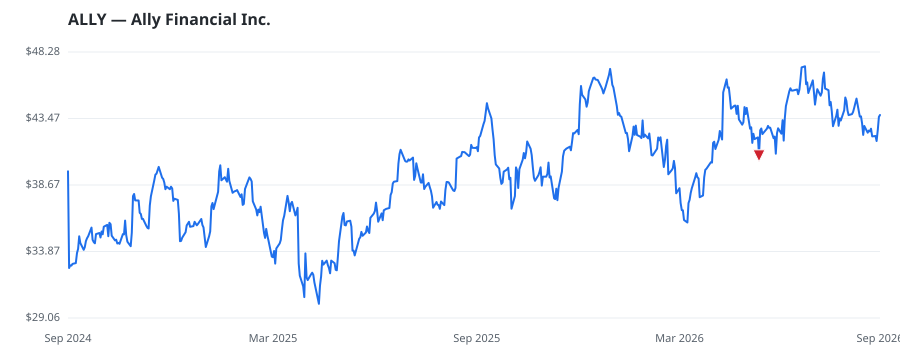

bullish · bearish · n/a — dots: price>SMA10 · SMA10>SMA50 · SMA50>SMA200 · up>down volume (20d)
Banks · large cap

Formerly the captive financial arm of General Motors, Ally Financial became an independent publicly traded firm in 2014 and is one of the largest consumer auto lenders in the country. While the firm has expanded its product offerings over time, it remains primarily focused on auto lending, with more than 70% of its loan book in consumer auto loans and dealer financing. Ally also offers auto insurance, commercial loans, credit cards, and holds a portfolio of mortgage debt, giving the bank a diversified business model, which includes brokerage services. STATE COMMERCIAL BANKS · website
| Revenue | $7.9B | Net income | $852.0M |
|---|---|---|---|
| Operating income | $1.1B | Diluted EPS | $2.37 |
| Assets | $196.0B | Equity | $15.5B |
| Fund | Fund alpha vs SPY | Position | % of book |
|---|---|---|---|
| ANTIPODES PARTNERS Ltd | +12% | $72M | 1.3% |
| American Assets Investment Management, LLC | +33% | $5M | 0.3% |
Hedge data: SEC EDGAR 13F · ranked funds beat SPY in >50% of their quarters · fund alpha = mirror-portfolio return minus SPY.